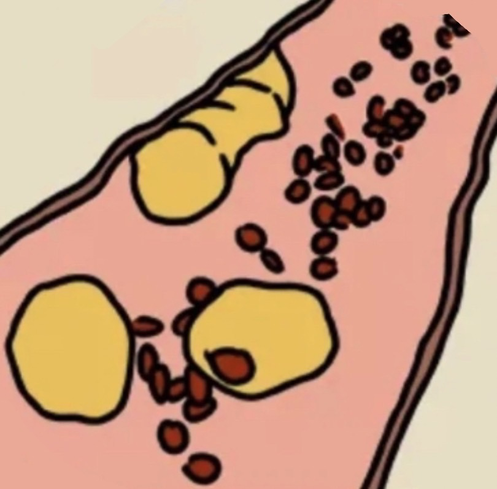
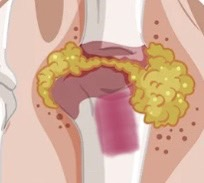
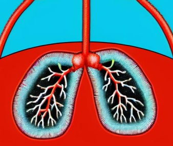
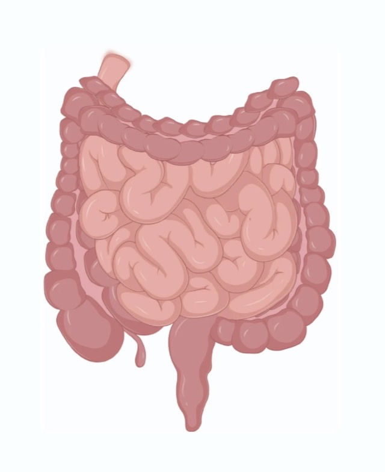

自主健康管理
Home
家醫科
咳嗽
高血壓
糖尿病
高血脂
甲狀腺
痛風
泌尿道感染
支氣管炎
支氣管擴張症
哮喘
肺炎
胸悶
打鼾和睡眠呼吸終止症
腸胃炎
Sign Up
Home
家醫科
咳嗽
高血壓
糖尿病
高血脂
甲狀腺
痛風
泌尿道感染
支氣管炎
支氣管擴張症
哮喘
肺炎
胸悶
打鼾和睡眠呼吸終止症
腸胃炎
Sign Up
家醫科
一起建立更穩定的
自主健康管理
快速導覽常見症狀與衛教主題，取得正確的照護資訊與自我管理工具。
開始瀏覽
會員註冊
健康圖文與工具入口
常見科別與症狀
高血壓
糖尿病

高血脂
甲狀腺

痛風
泌尿道感染
支氣管炎
咳嗽
哮喘

肺炎

腸胃炎
胸悶
打鼾和睡眠呼吸中止症
支氣管擴張症
食藥闢謠
長期使用軟便劑...
聽說打排卵針會...
小孩不敢吞藥可...
燕麥奶、豆奶可...
聽說食物用傳統...
隱形眼鏡只要泡...
優格可以加熱嗎?...
了解更多
保健闢謠
戒除檳榔之後就...
得到C型肝炎一...
有B型肝炎的媽...
減重期間為了少...
使用電子煙不會...
有做胸部低劑量...
血脂異常一定就...
了解更多
化妝品闢謠
使用化粧品真的...
聽說卸粧油可以...
聽說牙膏管底的...
牙膏可以拿來用...
想靠化粧品讓皮...
冬天還要使用防...
擦防曬護唇膏真...
了解更多
更多主題